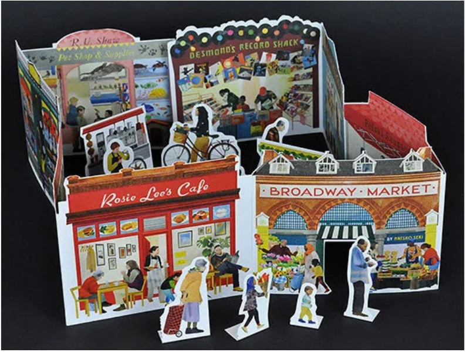
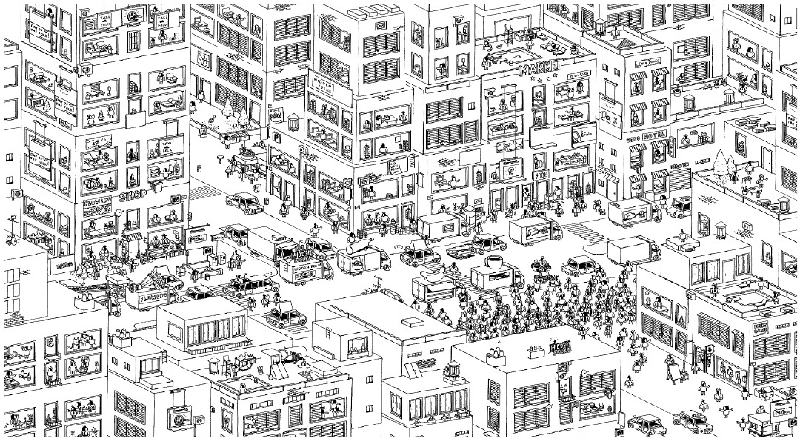
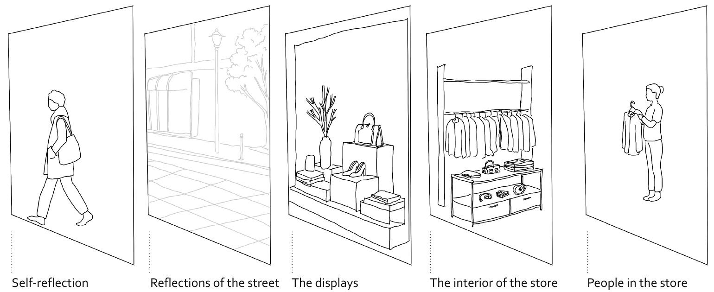
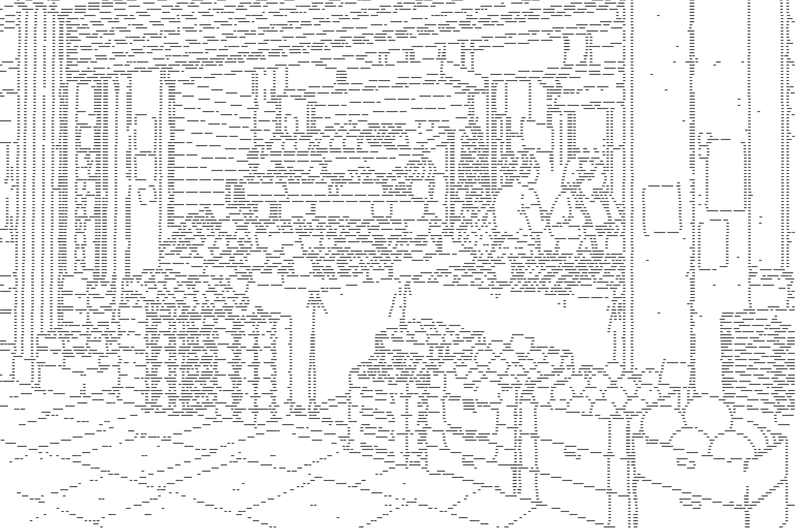
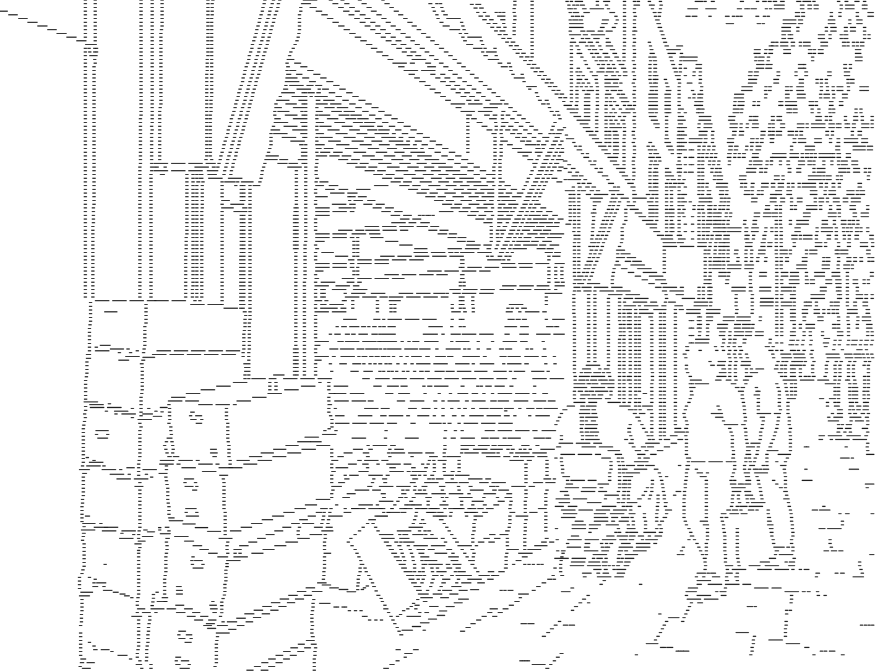
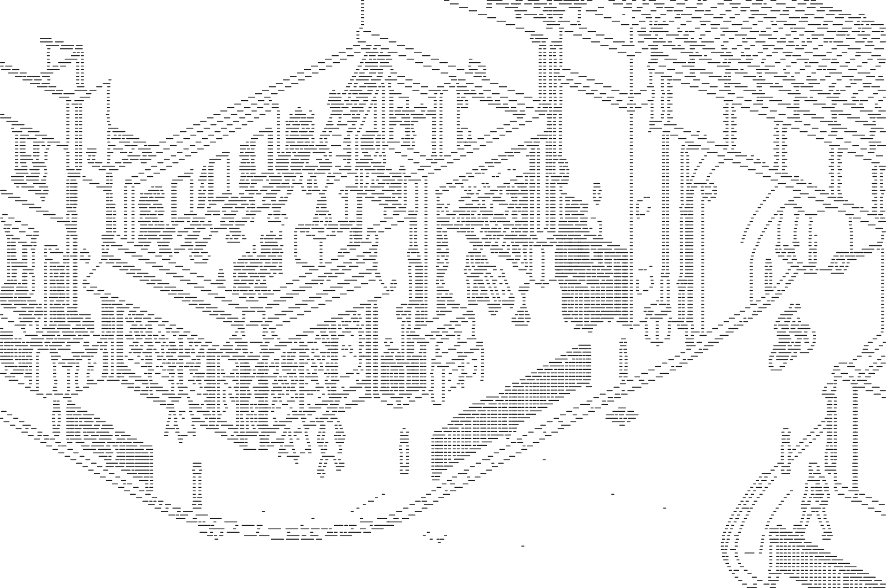
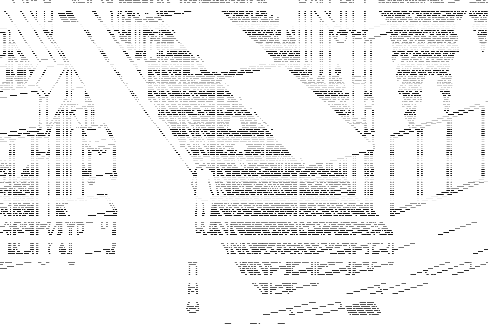
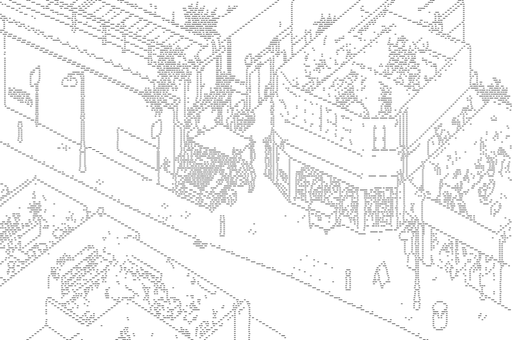

Drawing as a way
of looking closely.
I began drawing to spend more time with details that were easy to pass over in the street. Working from photographs let me look again at the relationship between a shop interior, its entrance, the goods outside and the pavement. Translating these scenes into line helped me compare their edges and arrangements with less emphasis on colour and surface texture.
The ideas came from ordinary configurations: boxes beneath a display, a trolley beside an entrance, goods hanging from a stall, or people gathered at a shop edge. Some SVG studies stayed close to the photographic framing. The wider drawings and shop sections then gave me ways to bring several spatial relationships into one view. Each involved selecting what to retain and what to leave out.
Where the drawing approach came from
Two references recorded in Unit 2 helped me think about how a street image could be explored. A layered paper model of shopfronts connected the street, facade, display and interior through separate planes. Hidden Folks offered a reference for a dense illustrated scene in which attention moves between the whole image and smaller details. These were influences on how I framed and organised the work.




My own five-layer window study separated the viewer’s reflection, street reflections, merchandise, the interior and people inside. This helped me think beyond the glass as a flat surface. Later shop sections extended that interest by placing interior arrangements, thresholds and pavement activity into one constructed view.


From photograph to SVG drawing











